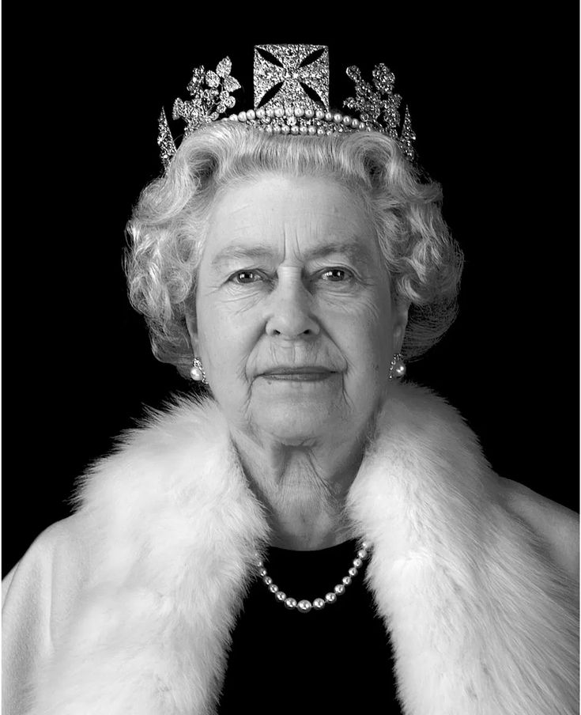

SumberRatu Elizabeth II (1926–2022) Elizabeth II adalah ratu terlama dalam sejarah Inggris, memerintah selama 70 tahun dari tahun 1952 hingga 2022. Ia adalah pemimpin monarki Inggris dan kepala negara 16 negara persemakmuran hingga kematiannya. Berikut adalah informasi penting tentang kehidupannya:
Nama lengkap: Elizabeth Alexandra Mary Windsor Lahir: 21 April 1926 di London, Inggris Orang tua: Raja George VI dan Ratu Elizabeth (Ibu Suri) Saudara kandung: Putri Margaret Gelar sebelum naik takhta: Putri Elizabeth, Duchess of Edinburgh
Sebagai anak sulung Raja George VI, Elizabeth tidak lahir sebagai pewaris langsung takhta. Namun, setelah pamannya Raja Edward VIII turun takhta pada 1936, ayahnya naik menjadi raja, menjadikan Elizabeth pewaris takhta.
Naik takhta: 6 Februari 1952 setelah kematian ayahnya, Raja George VI Penobatan: 2 Juni 1953, disiarkan di televisi dan ditonton oleh jutaan orang di seluruh dunia Pemerintahan terlama: Memerintah selama 70 tahun, melewati rekor Ratu Victoria. Sebagai ratu, Elizabeth memimpin Inggris melewati berbagai perubahan besar, dari masa kolonial hingga era modern globalisasi.
1. Dekolonisasi dan Persemakmuran Saat Elizabeth naik takhta, Inggris masih memiliki banyak koloni. Selama pemerintahannya, banyak negara memperoleh kemerdekaan, termasuk Kenya, Nigeria, dan Jamaika. Elizabeth tetap mempertahankan hubungan baik dengan negara-negara yang menjadi bagian dari Persemakmuran Inggris.
2. Krisis Politik
Krisis Suez (1956): Inggris kehilangan pengaruhnya di Timur Tengah setelah gagal merebut Terusan Suez dari Mesir. Pemogokan Tambang (1980-an): Konflik sosial besar selama pemerintahan Margaret Thatcher. Brexit (2016): Inggris memutuskan keluar dari Uni Eropa melalui referendum.
3. Kehidupan Keluarga yang Penuh Sorotan
Pernikahan dan perceraian Charles & Diana (1996) Kematian Putri Diana (1997): Elizabeth dikritik karena tanggapannya yang dinilai kurang emosional terhadap tragedi ini. Skandal Pangeran Andrew yang berujung pada pencabutan gelar militernya.
4. Teknologi dan Modernisasi Monarki
Menjadi ratu pertama yang mengirimkan email pada 1976. Menggunakan media sosial untuk berkomunikasi dengan rakyat.
Meninggal dunia: 8 September 2022 di Balmoral Castle, Skotlandia pada usia 96 tahun Penerusnya: Raja Charles III, putra sulungnya
Elizabeth dikenang sebagai ratu yang berdedikasi, penuh keteguhan, dan stabilitas di tengah perubahan zaman. Selama pemerintahannya, ia melihat 15 Perdana Menteri Inggris, mulai dari Winston Churchill hingga Liz Truss.
Warisan terbesar Elizabeth II adalah kemampuannya menjaga stabilitas monarki Inggris, meskipun dunia terus berubah secara drastis.